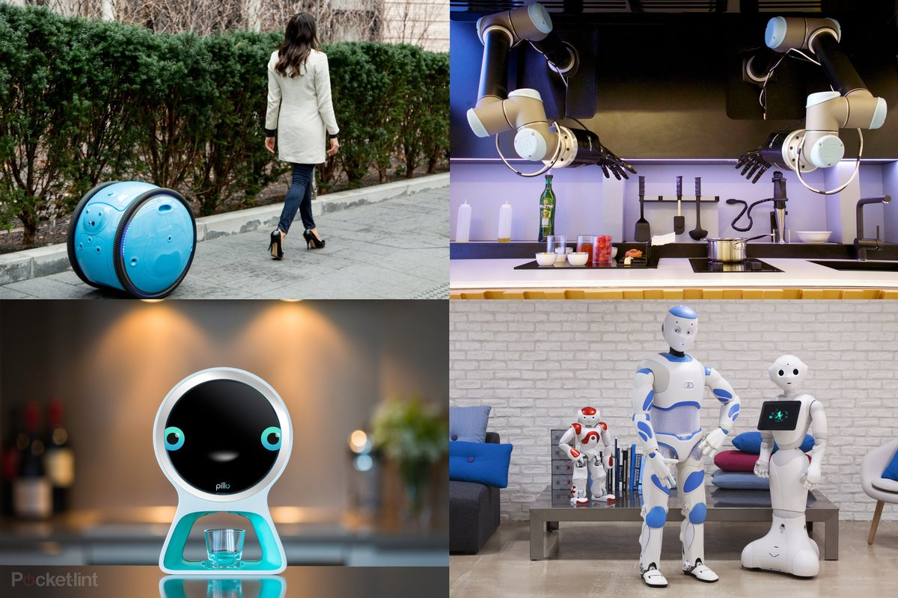
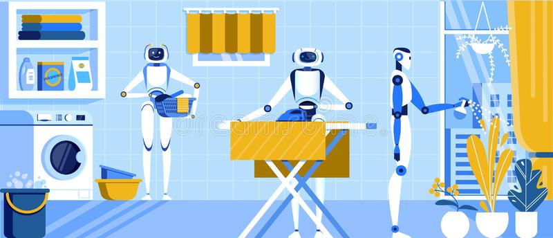
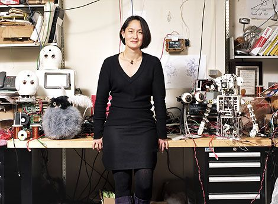

Humans have feared a robotic uprising since the machines first
appeared in science fiction. Today, experts caution against a
more insidious threat: We might like living with them too much.
By ERIC SOFGE
Being hacked by a robot requires much less hardware than I expected. There's no need for virtual-reality goggles or 3D holograms. There are no skullcaps studded with electrodes, no bulky cables or hair-thin nanowires snaking into my brain. Here's what it takes: one pair of alert, blinking eyeballs.
I'm in the Media Lab, part of MIT's sprawling campus in Cambridge, Mass. Like most designated research areas, the one belonging to the Personal Robots Group looks more like a teenage boy's bedroom than some pristine laboratory—it bursts with knotted cables, old pizza boxes and what are either dissected toys or autopsied robots. Amid the clutter, a 5-foot-tall, three-wheeled humanoid robot boots up and starts looking around the room. It's really looking, the oversize blue eyes tracking first, and the white, swollen, doll-like head following, moving and stopping as though focusing on each researcher's face. Nexi turns, looks at me. The eyes blink. I stop talking, midsentence, and look back. It's as instinctive as meeting a newborn's roving eyes. What do you want? I feel like asking. What do you need? If I was hoping for dispassionate, journalistic distance—and I was—I never had a chance.
"Right now it's doing a really basic look-around," researcher Matt Berlin says. "I think it's happy, because it has a face to look at." In another kind of robotics lab, a humanoid bot might be motivated by a specific physical goal—cross the room without falling, find the appropriate colored ball and give it a swift little kick. Nexi's functionality is more ineffable. This is a social robot. Its sole purpose is to interact with people. Its mission is to be accepted.
That's a mission any truly self-aware robot would probably turn down. To gain widespread acceptance could mean fighting decades of robot-related fear and loathing. Such stigmas range from doomsday predictions of machines that inevitably wage war on mankind to the belief that humanoid robots will always be hopelessly unnerving and unsuitable companions.
For Nexi, arguably the biggest star of the human–robot interaction (HRI) research field, fame is already synonymous with fear. Before visiting the Media Lab, I watched a video of Nexi that's been seen by thousands of people on YouTube. Nexi rolls into view, pivots stiffly to face the camera and introduces itself in a perfectly pleasant female voice. If the goal was to make Nexi endearing, the clip is a disaster. The eyes are big and expressive, the face is childish and cute, but everything is just slightly off, like a possessed doll masquerading as a giant toddler. Or, for the existentially minded, something more deeply disturbing—a robot with real emotions, equally capable of loving and despising you. Viewers dubbed its performance "creepy."
Now, staring back at Nexi, I'm an instant robot apologist. I want to shower those clips with embarrassingly positive comments, to tell the haters and the doubters that the future of HRI is bright. There's no way seniors will reject the meds handed to them by chattering, winking live-in-nurse bots. Children, no doubt, will love day-care robots, even if the bots sometimes fail to console them, or grind to an unresponsive halt because of buggy software or faulty battery packs. To turn today's faceless Roombas into tomorrow's active, autonomous machine companions, social robots need only to follow Nexi's example, tapping into powerful, even uncontrollable human instincts.
That's why Nexi's metallic arms and hands are drifting around in small, lifelike movements. It's why Nexi searches for faces and seems to look you in the eye. When it blinks again, with a little motorized buzz, I realize I'm smiling at this thing. I'm responding to it as one social, living creature to another. Nexi hasn't said a word, and I already want to be its friend.
As it turns out, knowing your brain is being hacked by a robot doesn't make it any easier to resist. And perhaps that's the real danger of social robots. While humans have been busy hypothesizing about malevolent computers and the limits of rubber flesh, roboticists may have stumbled onto a more genuine threat. When face to face with actual robots, people may become too attached. And like human relationships, those attachments can be fraught with pitfalls: How will grandma feel, for example, when her companion bot is packed off for an upgrade and comes back a complete stranger?
When a machine can push our Darwinian buttons so easily, dismissing our deep-seated reservations with a well-timed flutter of its artificial eyelids, maybe fear isn't such a stupid reaction after all. Maybe we've just been afraid of the wrong thing.
Robots began scaring us long before they existed. In 1921, the Czech play R.U.R., or Rossum's Universal Robots, simultaneously introduced the word "robot" and the threat of a robot apocalypse. In a proclamation issued in the play's first act, the robots, built as cheap, disposable laborers, make their intentions clear: "Robots of the world, we enjoin you to exterminate mankind. Don't spare the men. Don't spare the women." The origins of the evil robot can be traced back even further (see page 59), but R.U.R.'s new species of bogeyman was all the rage in the pulp sci-fi of the '40s and '50s—well before the actual research field of robotics. In fact, I, Robot author Isaac Asimov coined the term "robotics" at the same time that he began developing ethical laws for robots in his short stories.
By the time Arnold Schwarzenegger's T-800 gunned down an entire police precinct in the 1984 movie The Terminator, the robot insurgency had become one of pop culture's most entrenched clichés. The film has since become shorthand for a specific fear: that artificial intelligence (AI) will become too intelligent, too obsessed with self-preservation. The Terminator colors the way we think about robots, AI and even the booming business of unmanned warfare. The Office of Naval Research, among others, has studied whether ethical guidelines will be needed for military robots, and in a 2008 preliminary report the authors tackle the bleakest possible endgame: "Terminator scenarios where machines turn against us lesser humans."
But according to Patrick Lin, an assistant professor of philosophy at California Polytechnic State University and an ethics fellow at the U.S. Naval Academy, the need for ethical bots isn't restricted to the battlefield. "Social robots probably pose a greater risk to the average person than a military robot," Lin says. "They won't be armed, but we will be coming face to face with them, quite soon."
That, of course, is precisely the kind of quote reporters work hard to publish. The media homes in on juicy details about the hypothetical danger of self-organizing AI, and the prospect of amoral robots gunning down civilians. But the real threats posed by robots may have nothing to do with the Terminator scenario. Because compared to even the dumbest armed insurgent, robots are practically brain-dead.
Take Nexi, for example. Considered to be one of the most advanced social robots in the world, Nexi can understand only the most basic vocal instructions. During my visit, it couldn't even do that—it was in the process of being loaded with behavioral software developed for another MIT robot, the fuzzy, big- eared Leonardo. Now in semi-retirement—its motors have gone rickety—Leonardo learns from humans such lessons as which blocks fit into a given puzzle, or which stuffed animal is "good" and which it should be afraid of. The implications are of the mind-blowing variety: a robot that listens to what we say and learns to crave or fear what we tell it to. Programmed with Leonardo's smarts, "maybe in a year Nexi will be able to have a conversation with you that's very boring," MIT's Berlin says. "But it may be pretty interesting if you're trying to escape a burning building."
If David Hanson, the founder of Hanson Robotics, has his way, the Texas-based company's latest social robot, Zeno, could be talking circles around Nexi by the end of this year. At $2500, the 23-inch-tall humanoid robot would be a bargain, not because of its hardware but because of the code crammed into its cartoonish head. "The intelligent software can be aware of multiple people in a room," Hanson says. "It builds a mental model of who you are, what you like and what you said. We're getting to the point where it can hold an open-ended, open-domain conversation." Hanson plans to roll out a $250 mass-market version in 2011 or 2012, with the same facial- and vocal-recognition capabilities. His goal is to provide a powerful testbed for researchers, while also harnessing AI algorithms to make a robot toy that's actually fun for more than 15 minutes.
But for all of Nexi's and Zeno's social skills and painstaking simulation of emotional life, the bots are creatures of instinct, not introspection. Tracking software finds the human who's speaking, a keyword triggers a scripted response, and when you leave the room, they don't imagine where you've gone, whether the conversation helped or hurt you, or how to overthrow your government. "It's very difficult for an artificial intelligence to project in a physical sense," says Kevin Warwick, a professor of cybernetics at the University of Reading in England. "A robot can think about eventualities, but it can't think even one step ahead about the consequences of its decisions."
There are, of course, researchers who foresee rapid progress in computational neuroscience leading to inevitable "strong AI," or artificial intelligence that's not simply finishing your sentence in a Google search box, but mimicking human thought. IBM's Blue Brain Project, for one, is energizing doomsayers with its goal of creating a virtual brain, potentially as soon as 2019. Still, without a neurological map of our own sense of consequence or morality, the breakthroughs that would allow for a truly power-hungry or evil robot are nowhere in sight. Contemplating them is a little like debating the ethical pitfalls of unregulated teleportation. Until someone builds the Enterprise, why worry if Scotty is going to drunk-dial himself into your house?
Robots will not rise up en masse anytime soon. Nexi won't be e-mailing Zeno the "exterminate all humans" flier from R.U.R. to distribute among the world's Roombas, Predators and assembly-line welding machines. It's a fantasy, or, at best, a debate for another century. And like many robot fears, it threatens to drown out a more rational debate, one that stems from the fact that robots fall through nearly every legal and ethical crack. "If an autistic patient charges a robot and tries to damage it, how should the robot respond?" asks Lin, who is also planning to develop ethical guidelines for social healthcare bots.
"Should it shut down? It's an expensive piece of equipment—should it push back?" When the robots arrive in force, are we prepared for the collateral damage, both physical and psychological, they could inflict?
When our eyes see a robot, one that we think is autonomous—moving, acting, functioning under its own power—our mirror neurons fire. These same neurons activate when we watch another animal move, and neuroscientists suspect they're associated with learning, by way of imitation. Mirror neurons could care less about a wax statue, or a remote-control drone. It's the autonomous robot that lights the fuse, tricking the mind into treating a mechanical device as a living thing.
And yet, like many aspects of human–robot interaction, the full repercussions are unknown. Science-fiction writers may have spent a half-century theorizing about the long-term effects of living with robots, but science is only getting started. While the field of HRI goes about the business of collecting data and sorting out its methodologies, drawing solid conclusions can be impossible, or at least irresponsible. Take those mirror neurons, for example. Neuroscientists can watch them flip on, but the exact purpose of those neurons is still up for debate.
Another, more common example of the brain's mysterious response to robots is often referred to as the uncanny valley—a poetic way of saying, "robots are creepy." Proposed in a 1970 paper by roboticist Masahiro Mori, the uncanny valley describes a graph showing that humans feel more familiar with, and possibly more comfortable toward, humanoid machines. Until, that is, the machine becomes too human-like, tripping the same psychological alarms associated with seeing a dead or unhealthy human. At that point the graph collapses, and then rises again with the response to a real human being, or, theoretically, a perfect android. Whether this is a distortion of our fight-or-flight instincts or something more complex, Mori's word choice was important—the uncanny is not naked fear, but a mix of familiarity and fear, attraction and repulsion. It's a moment of cognitive dissonance that the brain can't reconcile, like encountering a talking Christmas tree, or a laughing corpse.
By academic standards, it's evocative, exciting stuff, describing what appears to be a widespread phenomenon. Nexi's unnerving YouTube clips seem like textbook examples, and the robot has plenty of unsettling company. The Japanese social bot CB2 (Child-robot with Biomimetic Body), with its realistic eyes, child-like proportions and gray skin, evokes near-universal horror among bloggers and reporters. Another Japanese robot, KOBIAN, features a wildly expressive face, with prominent eyebrows and a set of fully formed, ruby-red lips. It, too, was instantly branded creepy by the Western press. The designers of those social bots were actually trying to avoid the uncanny—Asian labs are packed with photorealistic androids that leap headlong into the twitching, undead depths of Mori's valley.
But just as the Terminator scenario withers under scrutiny, the uncanny valley theory is nowhere near as tidy as it sounds. Based on those YouTube clips, I had expected my meeting with Nexi to be hair-curling. Instead, I can see my grin scattered across computer monitors in the Media Lab. Nexi's forehead-mounted, depth-sensing infrared camera shows my face as a black and gray blur, and the camera in its right eye portrays me in color. I watch as I slip from the monitors, Nexi's head and eyes smoothly tracking to the next face. I am not creeped out—I'm a little jealous. I want Nexi to look at me again.
"There are some very practical things that we do to make our robots not creepy," Berlin says. The secret to Nexi's success, apparently, is within arm's reach of the robot: a slightly battered hardcover book titled The Illusion of Life: Disney Animation—required reading for the Personal Robots Group. "We're making an animation, in real time," Berlin says. Like many animated characters, Nexi's features and movements are those of exaggerated humanity. When it reaches for an object, its arm doesn't shoot forward with eerie precision. It wastes time and resources, orienting its eyes, head and body, and lazily arcing its hand toward the target. Nexi is physically inefficient, but socially proficient.
How proficient? In interactions with hundreds of human subjects, including residents of three Boston-area senior centers, researchers claim that no one has run screaming from Nexi. Quite the opposite: Many seniors tried to shake the robot's hand, or hug it. At least one of them planted a kiss on it. "It interacts with people in this very social way, so people treat it as a social entity in an interpersonal way, rather than a machine-like way," Cynthia Breazeal, director of the Personal Robots Group, says. "In studies with Nexi, we've shown that if you have the robot behave and move in ways that are known to enhance trust and engagement, the reaction is the same as it is with people. You're pushing the same buttons."
That principle has proven true for CB2 and KOBIAN as well. The research leaders of both projects claim that the apprehension directed at their robots online and in the media never materializes in person. With the exception of one Thai princess, everyone who encountered CB2 liked it, according to Osaka University's Minoru Asada. A Japanese newspaper brought a group of elderly to visit KOBIAN. They were "deeply pleased and moved," Atsuo Takanishi, a professor of mechanical engineering at Waseda University, says, "as if the robot really had emotion."
Even if the uncanny valley ends up being more of a shallow trench, one that's easily leveled by actually meeting an android, the success of Nexi and company only raises a more profound question: Why do we fall so hard for robots?
"It turns out that we're vulnerable to attaching, emotionally, to objects. We are extremely cheap dates," says Sherry Turkle, director of the MIT Initiative on Technology and Self. "Do we really want to exploit that?" Turkle has studied the powerful bond that can form between humans and robots such as Paro, an almost painfully cute Japanese baby-seal-shaped therapy bot that squirms in your arms, coos when caressed and recharges by sucking on a cabled pacifier. She has also documented assumptions of intelligence and even emotion reported by children playing with robotic dolls. The effect that Paro, a therapy bot that's little more than an animatronic stuffed animal, had on senior citizens only reinforced her concerns. "Tell me again why I need a robot baby sitter?" Turkle asks. "What are we saying to the child? What are we saying to the older person? That we're too busy with e-mail to care for those in need?"
To researchers like Turkle, the widespread deployment of social robots is as risky as it is inevitable. With some analysts estimating a $15 billion market for personal robots by 2015, the demand for expressive machines is expected to be voracious. At the heart of Turkle's argument—a call for caution, essentially—is the fear of outsourcing human interaction to autonomous machines. Even more alarming are the potential beneficiaries of robotic companionship, from children in understaffed schools to seniors suffering from Alzheimer's. Enlisting an army of robots to monitor the young and the elderly could be a bargain compared to the cost of hiring thousands of teachers and live-in nurses. But how will the first generation to grow up with robotic authority figures and friends handle unpredictable human relationships? Without more data, a well-intended response to manpower shortage could take on the ethical and legal dimensions of distributing a new and untested antidepressant.
One possible solution is to scale back the autonomy and use social bots as puppets. Huggable, another robot from MIT's Personal Robots Group, is a teddy bear whose movements can be controlled through a Web browser. The researchers plan to use it to comfort hospitalized children; family members or doctors would operate it remotely. When I see Huggable, it's actually a teddy bear skeleton. The furry coat, which will eventually be replaced with one that includes pressure- and touch-sensitive sensors, sits in a heap next to the bot as it fidgets. An open laptop shows the operator's view through Huggable's camera and a menu of simple commands, such as raising and lowering its arms, or aiming its head at my face.
For now, Huggable has no identity of its own. It's a high-tech ventriloquist's dummy channeling the voice of its operator, not a full-fledged social creature. In a recent paper describing the dangers of "parent" modes in Japanese robotic toys and the temptation to use robots as nannies, Noel Sharkey, a professor of artificial intelligence and robotics at the University of Sheffield in England, cited Huggable's lack of autonomy as a selling point. "Such robots do not give rise to the same ethical concerns as exclusive or near-exclusive care by autonomous robots," he wrote with a co-author. Semiautonomy might not cut payrolls, but it could be a safer way to roll out the first wave of social bots.
Sharkey's and Turkle's ominous point of view overlaps uncomfortably with the climate of fear that has always surrounded robots. And yet, nearly every researcher I spoke with agreed on a single point: We need ethical guidelines for robots, and we need them now. Not because robots lack a moral compass, but because their creators are operating in an ethical and legal vacuum. "When a bridge falls down, we have a rough-and-ready set of guidelines for apportioning out accountability," says P.W. Singer, a senior fellow at the Brookings Institution and author of Wired for War. "Now we have the equivalent of a bridge that can get up and move and operate in the world, and we don't have a way of figuring out who's responsible for it when it falls down."
In a debate steeped in speculation and short on empirical data, a set of smart ethical guidelines could act as an insurance policy. "My concern is not about the immediate yuck factor: What if this robot goes wrong?" says Chris Elliott, a systems engineer and trial lawyer who contributed to a recent Royal Academy report on autonomous systems. "It's that people will go wrong." Even if the large-scale psychological impact of social robots turns out to be zero, Elliott worries that a single mishap, and the corresponding backlash, could reverse years of progress. Imagine the media coverage of the first patient killed by a robotic surgeon, an autonomous car that T-bones a school bus or a video clip of a robotic orderly wrestling with a dementia patient. "The law is way behind. We could reach a point where we're afraid to deploy new beneficial robots because of the legal uncertainty," Elliott says.
The exact nature of those guidelines is still anyone's guess. One option would be to restrict the use of each robotic class or model to a specific mission—nurse bots that can visit with patients within a certain age range, or elder-care bots that watch for dangerous falls but aren't built for small talk and snuggling. In the long run, David Hanson believes AI should be explicitly programmed to cooperate with humans, so that when robots self-evolve they have what he calls the "wisdom" not to harm us. Cynthia Breazeal's take is more hard-nosed. "Now is certainly the time to start hammering things out," she says. "People should have a serious dialogue before these robots are in contact with vulnerable populations."
Philosophers, ethicists, lawyers and roboticists have only begun the hard work of fleshing out Asimov's early code of robo-ethics. In the meantime, if there's a way to dismantle our long-standing, irrational fear of robots and head off any risk of a Luddite backlash, it might be up to robots such as Nexi.
While I'm eyeing the gears and servos along Nexi's exposed back, a tour group shows up in the Media Lab unannounced. A crowd of kids, maybe fifth or sixth graders, approaches the robot. Nexi is tracking their faces when one of the boys gets a little too close. The robot's eyebrows swivel inward. The eyelids narrow as the head tilts down. And the worm motors that control Nexi's fingers whine like electric drills as its fists clench.
"Whoa!" the kid in the lead says, and they all backpedal.
"Is it getting mad?" one girl asks the researchers.
Then Nexi's face softens and, instantly, they're laughing.
"So do you give robots emotions?" another girl asks.
I remember something Breazeal told me earlier: that for kids who grow up around robots, the uncanny valley could be irrelevant and The Terminator little more than a quaint story. Vulnerable or not, children interact with these machines differently.
Understanding the limits and strange potential of robotics might be as simple as letting them meet the models most like them—the ones built to live at their sides. Maybe Nexi could act as that first, limited exposure, a vaccine against the wild fears and warped perceptions the rest of us have grown up with.
The kids provoke Nexi's anger response again, laughing more this time. When its eyebrows level, the lead boy jabs his friend and points at the robot's impassive face.
"It's smiling at you! It's smiling!"